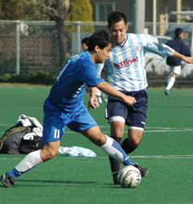
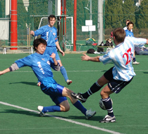
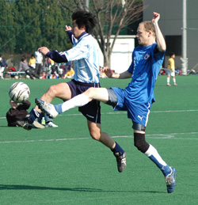

|
Hachioji Park, Sat 27th Jan. The Jets’ TML 1 campaigned continued in familiar style – a narrow defeat against one of the top teams. The goal coming mid-way through the first half – a good cross from the right went over everyone’s head and was volleyed home from 15 yards by the left midfielder, off the inside of the far post. YCAC will no doubt consider themselves worthy winners and will feel that they could have scored more, however, the Jets had a few chances and with a bit more belief in the final third could have improved on their dreadful scoring record. In all though, despite competing all over the pitch the Jets were once again found wanting in the goals department.
The Jets started nervously, giving the ball away in defence within the first 10 seconds allowing YCAC a shooting opportunity. Responding immediately Loren pounced on a through ball, muscled his way into the area and forced a save from the YCAC keeper, who did well to turn away the Jets’ striker’s goal bound shot on his left side. YCAC pressed and enjoyed the bulk of possession without really creating much in the way of clear cut chances.
With Eite and Turner strong in the centre, Hayahi’s pace down the right and left back Bentz consistently offering himself as an outlet to start building the play from the back, the Jets’ defence was again proving effective. Meanwhile Sasaki, in the middle, was always available to receive the ball and showed good composure throughout the match, keeping possession and attempting to feed the forwards with measured passes, whilst Faricy competed for everything in the air, winning, as usual, more than his fair share of headers.
The goal, when it came, hardly affected the Jets, so used are they to falling behind this season. Soon after the goal some slick interplay between Loren and Gildart, who combined so effectively throughout the game, put Shimizu through on the left hand side, but with just the keeper to beat a poor first touch allowed the YCAC man to snuff out the chance.

One down, but reasonably pleased with the performance the Jets came out for the second half hopeful that a similar level of performance would earn them something from the match. Despite enjoying brief periods of pressure the Jets couldn’t create anything clear cut. YCAC have probably played better, always dangerous from set pieces, it wasn’t until the Jets switched to three-at-the-back, that they assumed dominance. With the outlet provided by the full backs sacrificed for an additional forward player, Kousuke the ‘keeper was forced into long goal kicks which the YCAC midfield won with monotonous regularity, setting up a series of shooting opportunities which fortunately for the Jets’ all found their way into the park’s perimeter net rather than the goal net. The final few minutes saw a bit more activity in Yokohama’s final third and their keeper had to be on his toes to reach a through ball just in time to block Loren and prevent a last-kick equalizer. Once more Saitama came up just a little short in terms of results but can be reasonably happy with the performance. With five teams competing to avoid the two relegation places it will be results against the teams around us that will ultimately decide our fate..
Report by Rob Keating
|